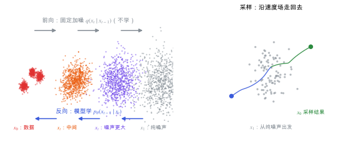

生成模型
扩散、流匹配与自回归模型分别怎样从数据分布中采样，三者共享哪一条数学骨架，以及在结构生成里各自要付什么代价。
直观阅读需要
- 概率分布与采样的概念
- 神经网络只是参数化的函数
只是提示，不需要先读完才能往下看。
直觉直观解释
生成模型要解决的问题是：给定一堆样本（分子、晶体结构、图像），学出一个分布 \hat p(x)，使得从它里面采出来的新样本“像”训练数据，但又不是训练数据的拷贝。
两条完全不同的路线：
- 一次性生成：从噪声出发，经过固定的若干步变换，一次得到整个样本。扩散模型、流匹配都属于这一类。样本的每个部分同时决定，没有先后顺序。
- 逐段生成：按某种顺序一个接一个地决定样本的各个部分（一个原子一个原子、一个 token 一个 token）。自回归模型属于这一类。
两者的差别在结构上：一次性生成必须自己保证各部分之间的一致性；自回归天然保证一致性，但要选定一个顺序，而顺序本身会引入偏差（例如晶体里没有天然的“第一个原子”）。
图里画了一次性生成的骨架：数据分布经过一条固定的“加噪”路径被抹成噪声，模型学的就是这条路径的逆过程；采样时从噪声出发沿逆路径走回去。

| 符号 | 是什么 | 图里对应哪部分 |
|---|---|---|
| x_0 | 数据样本（真实分布里的一个点） | 左图最左的分布 |
| x_t | 加噪到时刻 t 的样本 | 左图中间的分布 |
| t | 噪声水平（连续时间）或步数（离散） | 从左到右递增 |
| v_\theta | 模型学到的“往回走”的方向场 | 右图箭头 |
| x_1 | 纯噪声（标准正态） | 最右端 |
定义与公式数学与推导
扩散模型：学加噪的逆过程
DDPM [Ho et al. 2020 (DDPM)] 定义一条固定的前向马尔可夫链，每一步加一点高斯噪声：
其中 \beta_t 是第 t 步的噪声方差（预先设定的调度表）；\sqrt{1-\beta_t} 保证方差大致守恒；\mathbf{I} 是单位矩阵。多步合并后有闭式：
其中 \bar\alpha_t 是累积保留系数。
反向过程用网络 \epsilon_\theta 预测每一步加的噪声：
其中 \epsilon 是实际加的噪声；\epsilon_\theta(\cdot,t) 是以噪声水平和当前样本为输入的预测网络。这个目标就是从变分下界化简出来的版本 [Ho et al. 2020 (DDPM)]。
得分 SDE：把扩散写成连续时间
得分 SDE 框架 [Song et al. 2020 (Score SDE)] 把上面的离散链写成随机微分方程：
其中 f 是漂移项；g 是扩散系数；dw 是维纳过程增量。对应的反向时间 SDE 是
其中 \nabla_x \log p_t(x) 是得分函数（对数概率密度的梯度）；d\bar w 是反向时间的维纳过程。模型只需要学得分函数，而不需要知道 p_t 本身——这是这一类方法的核心技巧。
流匹配：学一个速度场
流匹配 [Lipman et al. 2022 (Flow Matching)] 不用加噪-去噪的语言，而是直接学一个把噪声搬到数据的速度场：
其中 x_0 是噪声样本；x_1 是数据样本；x_t 是二者之间的直线插值；v_\theta 是待学的速度场。这个目标不需要模拟 SDE，训练更直接。
在本研究线里的样子对应与边界
在结构生成里要额外处理什么
分子和晶体不是普通向量，生成时还要满足：
- 原子种类与数目的离散性：类别变量不能直接加高斯噪声，需要用 one-hot 的连续松弛或在离散空间定义过程；
- 几何对称性：整体平移、旋转、以及同类原子的置换不改变结构（见 对称性与等变性）；好的模型把这些对称性内建进去，而不是靠数据去学；
- 周期性：晶体要在晶胞、分数坐标上生成，边界条件与真空中的分子完全不同（见 晶体结构生成模型）。
评价指标：生成得像不像
不能只看单个样本“顺眼”，要有分布层面的指标。分子生成里常用：
- 有效性/唯一性/新颖性 (validity / uniqueness / novelty)：生成的分子能不能通过化学规则检查、彼此是否重复、是否在训练集里出现过 [Polykovskiy et al. 2020 (MOSES)]；
- Fréchet ChemNet Distance (FCD)：把生成集与参考集分别送进一个固定的化学信息网络，比较两组特征分布的 Fréchet 距离 [Preuer et al. 2018 (FCD)]。
常见坑对应与边界
- 把一次性生成当成“更先进”：一次性和自回归各有适用场景。晶体里原子等价、没有自然顺序，自回归要先定义一个顺序，这个选择会引入系统性偏差。
- 只看单样本质量：几个漂亮样本不能说明分布学到了；必须用分布层面的指标，并且和参考集放在一起看。
- 忽略对称性：不内建对称性的模型会把同一结构的不同旋转当成不同样本，训练效率低，还会生成重复结构。
- 拿指标当物理正确性：FCD 低只说明“像训练数据”，不说明生成的结构能量合理。结构生成之后仍要做能量排序与弛豫（见 晶体结构预测：搜索与排序）。
- 训练集泄漏进评价：新颖性指标必须在训练集之外计算，否则数字没有意义。
检验自己对应与边界
子条目
- 晶体结构生成模型（候选，还没有正文）生成晶体需要同时处理晶胞、分数坐标和周期性，分子晶体还要处理刚性分子和堆积。
参考资料
论文Ho et al. 2020 (DDPM)
尚未实际查阅，目前只是拟查阅书目
论文Song et al. 2020 (Score SDE)
尚未实际查阅，目前只是拟查阅书目
论文Lipman et al. 2022 (Flow Matching)
尚未实际查阅，目前只是拟查阅书目
基准研究Polykovskiy et al. 2020 (MOSES)
尚未实际查阅，目前只是拟查阅书目
论文Preuer et al. 2018 (FCD)
尚未实际查阅，目前只是拟查阅书目
分类机器学习 · 概念 · 研究线：晶体结构生成 · 状态：草稿